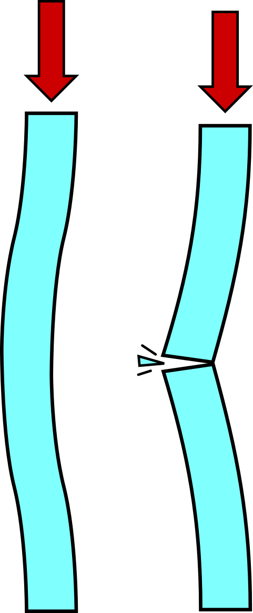

Stability¶
The structures we are studying, in addition to being rigid to support loads without breaking or deforming, must be stable so as not to overturn, slide or oscillate under external forces.
There are several problems that structures can present due to their lack of stability. The most common are detailed below.
Dump¶
The overturning of a structure occurs when the center of gravity is not on the base of support of the structure.
- Center of gravity:
It is the midpoint of the entire mass of the structure. It is the point where intuitively we have to support the structure so that it does not tip to one side or the other.
In the case of a hammer, its center of gravity is in the handle, very close to the head, which is the part that weighs the most.


In the case of the truck in the figure, the center of gravity is at the relatively high red dot.
In the first image, the center of gravity falls within the support zone, so the truck is stable and does not overturn.
In the second image the truck is tilted and the center of gravity is about to leave the support area. The truck is about to overturn.
In the third image the truck has leaned more and the center of gravity is not over the support zone. In this case the truck is not stable and will overturn.
For the overturning of a structure to occur, the center of gravity must fall outside the area of support of the structure with the ground.
Overturning solutions¶
There are several solutions to prevent a structure from tipping over.
- Add a counterweight
When a structure is listing too much to one side or a lateral weight can cause it to tip over, a counterweight on the opposite side can solve the problem.
Example: Counterweight in construction cranes or crane trucks.
- Expand your base of support
The larger the base of support, the more difficult it is for the center of gravity to fall off the base.
Examples: Crane truck with extensible supports. Very wide sports car. People instinctively separate their feet from each other to have a greater base of support when the ground moves.
- Lower center of gravity
If the center of gravity is lower, it is more difficult to fall off the base of support.
Examples: To lower the center of gravity of a truck, you have to place the heaviest packages in the lower part and the lighter ones in the upper part. Sports cars are usually low to have a low center of gravity and thus achieve greater stability.
- Anchor the structure to the ground
With this solution, the structure is reinforced by extending it to the ground.
Examples: Winds from a tent. Anchor cables of an antenna. Lamppost or flag pole anchored to the ground.
{kind=link}
{kind=link}
{kind=link}
{kind=link}
Buckling¶
{kind=link}
The buckling is an instability that occurs in slender bars and columns subjected to compression.
When the shape of the bar or column is very narrow and very long (slender), it risks bending and thus losing its strength. The end result is that the structure flexes until it splits and fails.
Buckling Solutions¶
- Make the profile thicker
If we increase the profile of the bar or column making them thicker, they will no longer be slender and buckling will not occur.
For example, a thick tube with thin walls can be used instead of a solid rod. Both have the same weight and the same amount of material, but the hollow tube does not buckle while the solid bar, which is more slender, does.
This is used, for example, in bicycle structures that are made of tubular bars or in electrical tower structures that are made of L-shaped bars instead of solid bars.
- Hold the center of the bar
If we hold the center of the bar to prevent it from moving, buckling will not occur.
For example, a high tension tower is built with four slender vertical bars that support most of the weight and horizontal and oblique bars between them that prevent the vertical bars from buckling.
Oscillations¶
The oscillations or vibrations of a structure can be beneficial or detrimental.
In certain cases it is convenient that the structure is not completely rigid. If the structure can flex and oscillate under an external load, this allows it to avoid failure. We have examples of this behavior in skyscrapers that oscillate on their roof in the event of an earthquake or in case of supporting strong winds. The masts of a ship or the wings of an airplane are also capable of oscillating to adapt to the forces they support. If these structures were completely rigid, they could be destroyed with the great efforts they support.
In other cases, the oscillations can add up little by little, just like on a swing, causing the structure to oscillate with increasing amplitude until it collapses. This is what happened to the famous Tacoma Narrows Bridge nicknamed Gallopin Gertie because of the great oscillations it suffered when the summer breeze blew when it was inaugurated. As autumn arrived, a wind of just 40 miles per hour collapsed the bridge, fortunately causing no deaths. You can watch a recording of the event on YouTube:
Without being so dramatic, the oscillations can produce very annoying noises and vibrations in other cases. This occurs especially at resonant frequencies, which are the frequencies at which a structure naturally vibrates. Adding little by little the effects of a small vibration at the same resonant frequency, the oscillation, just like a swing, can become very large and annoying.
Solutions to oscillations¶
- Avoid swinging loads
- This is the solution taken by soldiers walking in formation over a bridge that is not very rigid. In this case the soldiers stop walking at the same time and start walking in a disorganized way so that the bridge does not resonate in time with the footsteps [1] .
- Cushion structure
- This is the solution that is taken in the wheels of vehicles or in some buildings resistant to earthquakes. A damper is an element that stops oscillations and reduces resonance.
Exercises¶
- What stability problems can structures have?
- Draw an unstable structure and another that is very stable.
- When does a structure overturn?
- What solutions are there to prevent a structure from tipping over? Write an example of each.
- What is buckling?
- How can buckling be avoided?
- How can harmful oscillations in a structure be avoided?
Grades
| [1] | The Broughton Bridge was a suspension bridge in Manchester, England, which in 1831 collapsed as a result of the passage of a troop of soldiers walking in formation. |